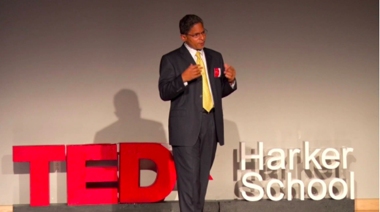

When did you first discover research, and what led you to it?
That’s an easy question, I first discovered research in graduate school. My discovery of research was inevitable because I was in graduate school and I was expected to do research. Of course, what I first encountered was other people’s research – reading about their work – and almost simultaneously with that I was conducting analysis and calculations of my own.
What projects are you currently working on?
I am currently working on a bunch of astrophysics projects – a whole lot actually, too many to list easily. The general themes that I am interested in are the assembly of Baryons and dark matter in galaxies. I am an observational astronomer, so I make observations of the universe and natural world around us to see if we can obtain clues for how these processes happen – how chemical processes of dark matter assembly and other components of galaxies happen. These are things I’ve been studying for a while now.
What is the role of youth in research?
I believe youth have a very big role to play in research for a variety of reasons, first thing is – which sort of goes back to your first question – I discovered research very late in life, way too late in my opinion. One shouldn’t have to wait to finish a college degree, one shouldn’t have to wait to finish a master’s degree, like I did, before one has exposure to research. That is too late because you get ingrained in your way of thinking, in your way of problem solving, and then you have to unlearn things. So, I believe that the need for youth to get involved in research is intimately related to the fact that all traditional methods for teaching youth is very disconnected from problem solving in the real world. The nature of the disconnect is such that children don’t get to see real world problem solving or research unless they make a special effort to do so. It should be on the researcher to engage youth in research and help bridge the gap between the way high school education traditionally works and the way real world problem solving works. We can and should do more in terms of rethinking high school and college curriculum to bring more open-ended problem solving into thought.
I want to take a moment to emphasize that the word research is often misunderstood among people. I have encountered that quite directly in my own communication with people. Of course, in order to even understand whether one is making a new contribution to the field one has to understand what has already happened before, one has to contextualize one’s work in terms of what other people have done and what is already known. How can you push into the unknown if you do not know what is already known? Then one can try to push the frontiers of knowledge forward by tackling a problem no one has solved before. Those two things together make up research. For a lot of people when they hear the word research they think, “oh I need to buy a new refrigerator, let me research what is out there”. When they do that, they are not pushing forward he boundaries of knowledge, they are merely trying to find out what is known. Only doing that is not enough, and clearly just trying to push the boundaries forward with an open-ended problem without already knowing what’s been done is futile as well. Most people, when you say the word research, think about “oh this person is trying to find out what is already known about the field”, just like buying a new refrigerator; I want to find out what new, what’s efficient, I go on Yelp. That is one kind of research, but scientific research doesn’t stop there. Its an essential component but not the sole part of it.
What does the future of research look like? How has research evolved for you?
I’ve been in research for over 3 decades, it has been 32 years since I started graduate school. I have seen a couple of ways that research has evolved. Questions that were burning questions at some point in time get resolved, someone finds the answer, or someone finds that the questions is not relevant anymore – there is also a meaningful outcome to say that we were worrying about this particular question but it is not important anymore. There are many reasons a question can lose its importance – sometimes because of other things that have been found out that contextualize the question into a corner that is not long important or front and center. Questions that never even existed, ones that you’d never even imagine you’d be asking, suddenly become front and center because of new discoveries.
Certainly, research is evolving in dynamic, and in a strange way I think research is growing. We are in a bubble where you know what you know and if you push out, and as your volume of knowledge increases, the surface area of that bubble increases too. There’s more contact points with the unknown – as your volume of knowledge increases so does your understanding of what you don’t know. As you answer questions, new ones pop up. I somehow feel that the number of areas of research, and the number of people involved in research has grown in the time I’ve been a researcher.
What inspires you? What advice do you have for younger researchers?
I believe I was inspired by the notion that even individuals, even one researcher working in some corner somewhere, can make a big difference. That inspiration came from a variety of sources and individuals. We’ve all been inspired by specific individuals. As a physicist, you hear about all the great physicists who works through the century – Madame Curie, Albert Einstein, and other scientists as well. I was inspired by the work of Charles Darwin and inventors like Thomas Edison. Very often these people you are inspired by are very distant, people you have never met, and you don’t know anyone who knows them personally – they are put up on a pedestal, so they are not always the best sources of inspiration. They are just one kind of inspiration. The fact that they’re so distant makes their work unattainable and difficult to replicate from the standpoint of a high school student.
My work was changed by a particular meeting I had – completely by chance – and this person was not a scientist but she embodied the notion that one person can change the world and make a huge difference. When I met her face to face and as a flesh and blood person in front of me – it was Mother Teresa! […] I was speechless – I was standing in the presence of one person who had changed the world. There was such a light about her. She taught me in that moment what the power of conviction and hard work could do. I had another moment in 2017, this year itself, where I met another remarkable woman who was a scientist who was remarkable and was one person fighting the odds. This was a scientist by the name of Jane Goodall. She told me to follow my heart, which endorsed what I was doing. […] these two people, both women, are my inspiration.
My advice for young researchers is to follow your heart, not your head. I am echoing what Jane Goodall wrote to me, follow you heart, you’ll find what you are passionate about and follow it. Don’t give up on your passion. People work hard and their best when they follow their passions. I am really fortunate because I was able to follow my love of space and I am deeply grateful I could do that. My other words of advice to young people is that research is hard and slow. If you are convinced about your passion it is ok that the process is slow and hard. If you are passionate about something it is easy to persevere and not give up. I encourage young people to have grit, because that combined with passion will make you a successful researcher.